What iptables are?
iptables is used to configure, maintain, and inspect the tables of IP packet filtering rules in the Linux kernel. Several different tables can be defined. Each table contains a number of built-in chains and may also contain user-defined chains.
Each chain is a list of rules that can match a set of packets. Each rule specifies what should be done with a packet that matches it. This is called the target, which can also be a jump to a user-defined chain within the same table.
A firewall rule specifies criteria for a packet and a target. If the packet does not match the rule, the next rule in the chain is examined. If it does match, the next action is determined by the value of the target, which can be the name of a user-defined chain or one of the special values ACCEPT, DROP, QUEUE, or RETURN.
ACCEPT means that the packet is allowed to pass through.
DROP means that the packet is completely discarded.
QUEUE means that the packet is passed to userspace.
(How a packet can be received by a userspace process depends on the particular queue handler. Linux kernels 2.4.x and 2.6.x up to version 2.6.13 include the ip_queue queue handler. Kernels 2.6.14 and later additionally include the nfnetlink_queue queue handler. Packets with the QUEUE target are sent to queue number 0 in this case.)
RETURN means that processing of the current chain stops and continues with the next rule in the previous (calling) chain. If the end of a built-in chain is reached, or if a rule in a built-in chain is matched with the RETURN target, the chain's policy determines the final fate of the packet.
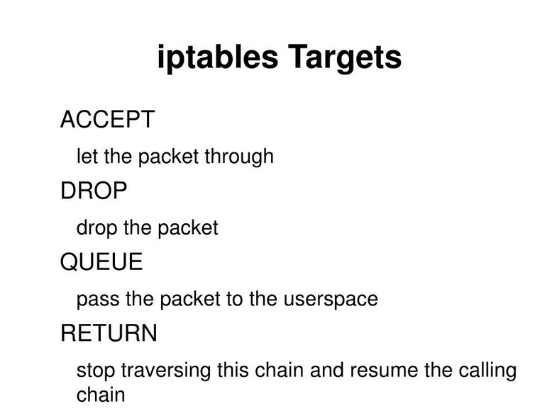
At the moment, there are three independent tables, although which tables are available at any given time depends on the Linux kernel configuration options and on the modules that are installed or loaded.
The -t or --table option specifies the packet-matching table on which the command will operate. If the kernel is configured to load modules automatically, an attempt will be made to load the appropriate module for the specified table if it is not already available.
The filter table is the default table when the -t option is not used. It contains the built-in chains INPUT (similar to inbound traffic), which concerns packets destined for the local system; FORWARD, which concerns packets routed through the system; and OUTPUT (similar to outbound traffic), which concerns packets generated locally. The nat table is used when a packet creates a new connection. It contains the built-in chains PREROUTING, for modifying packets immediately after they enter the system; OUTPUT, for modifying locally generated packets before routing; and POSTROUTING, for modifying packets shortly before they leave the system.
The mangle table is used for specialized packet modifications. Up to Linux kernel version 2.4.17, it contained only the PREROUTING and OUTPUT chains. From version 2.4.18 onward, it also supports the INPUT chain, for packets entering the system itself; FORWARD, for packets routed through the system; and POSTROUTING, for packets that are about to leave the system. The raw table is used mainly to configure exceptions to connection tracking, in conjunction with the NOTRACK target. This table is registered with the Netfilter hooks at a higher priority and therefore runs before ip_conntrack or any other IP table. It contains the PREROUTING chain, for packets arriving through any network interface, and the OUTPUT chain, for packets generated by local processes.
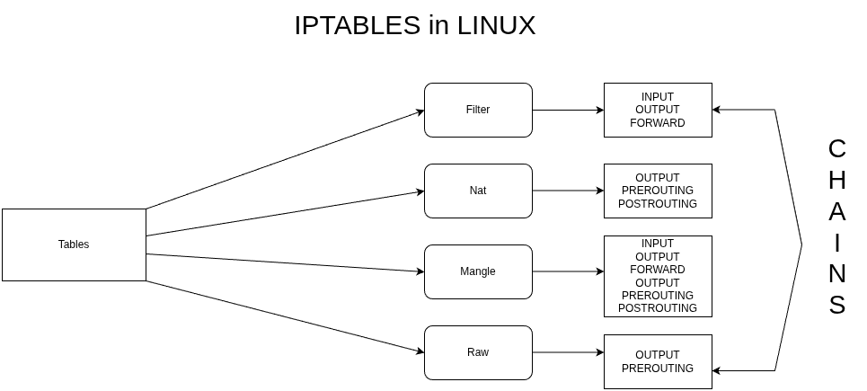
iptables are pre-installed on most Linux distributions. In our example, we will use a Debian 11 machine, and to check whether iptables is installed and which version is installed, we run the following command (using sudo for full privileges, or logging in as root, which is not particularly recommended).
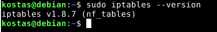
For now, we will focus on the filter table, which is the simplest and most basic one. To see what rules we have, we run:
Below, we can see the results for the rules of each chain. We don't have any rules configured at the moment, so they are all empty.
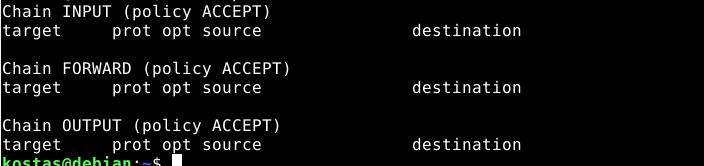
We can also see that the policy is set to ACCEPT. This means that by default, when there is no rule that matches the traffic, the traffic is allowed. In our case, this means that all traffic is allowed.
To begin, let's run a test. I will try to connect from my main machine (Linux Mint) to the Debian 11 VM via SSH, which I already have installed.
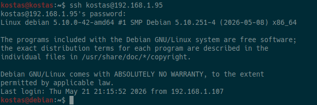
(We can see that we have access.)
Let's run the following command now:
Now, if we try to connect from our main machine using SSH, we’ll notice that we’ll be waiting forever. This happens because we set the INPUT policy to DROP, meaning that the default behavior is to DROP everything. Since we don’t have any other rule here to ACCEPT (a.k.a. permit) the traffic, all inbound traffic to the Debian server is blocked.
Let's set it back to ACCEPT for now.
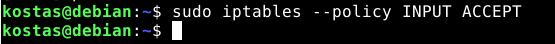
Options/COMMANDS
iptables has a number of options (or flags) that we write as part of a command. These options determine the specific action that will be performed. Only one of these can be specified on the command line, unless stated otherwise below. For all long versions of commands and option names, you only need to use enough letters for iptables to distinguish them from all other available options. Some of the basic options are: -A, --append chain rule-specification Append one or more rules to the end of the selected chain. When the source and/or destination names resolve to multiple addresses, a rule will be added for every possible combination of addresses. -D, --delete chain rule-specification -D, --delete chain rulenum Delete one or more rules from the selected chain. There are two versions of this command: the rule can be specified either by its number within the chain (starting from 1 for the first rule) or by specifying the rule description that we want to match. -I, --insert chain [rulenum] rule-specification Insert one or more rules into the selected chain at a specific position (rule number). If the rule number is 1, the rule or rules are inserted at the beginning of the chain. This is also the default if no rule number is specified. -R, --replace chain rulenum rule-specification Replace a rule in the selected chain. If the source and/or destination names resolve to multiple addresses, the command will fail. Rules are numbered starting from 1. -L, --list [chain] List all rules in the selected chain. If no chain is specified, all chains are displayed. As with every other iptables command, this is applied to the specified table (the default is the filter table).
Let's now write a basic command that will prevent our machine (Debian 11) from communicating with the IP address 8.8.4.4.
What we did was select the filter table (which is the default anyway), the OUTPUT chain for packets sent from the machine to a destination, and we will append it, meaning we will add it to the end of the list (although it doesn't really matter, since it is the only rule we have). Then, we specify the destination IP (e.g., 8.8.4.4) and the action. Here, we want to set it to DROP (a.k.a. deny).
Below, we can list the filter table:
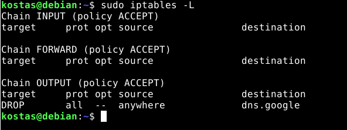
We can see that our rule has been added, and the domain name has also been automatically looked up (8.8.4.4 resolves to dns.google).
Now, if we ping, we can see that we are unable to send packets to this IP address.
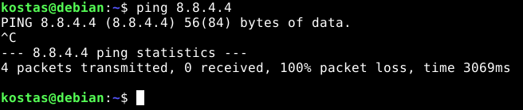
We've added the rule, but there's one problem: iptables rules are not automatically saved after a reboot. We need the iptables-persistent package.
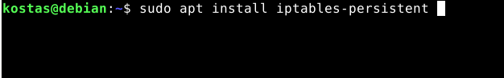
During the installation process, we will be asked whether we want to save our rules, so we’re all set.
Now, for next time, we switch to root and run the following command so that our rules are saved every time we make a change.
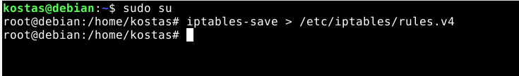
Now that we’ve seen rules that apply to the machine itself, let’s look at the case of forwarding that is, rules related to packets that the machine routes/forwards but that are not generated by the machine itself. In simple terms, we’ll make it work like a router with some rules in place.
First, we’ll log in as root (using sudo su), and then we’ll run the following command to change the value of the ip_forward file to 1 (i.e., true).
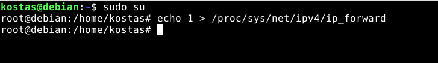
Then, if we want it to remain enabled even after a reboot, we edit the following file.
And we add the following.
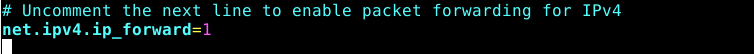
Now we’ll use another device as a host that will use our router for example, an Android phone. The router can be our VM (Debian 11), but it doesn’t really matter since we’ve bridged it to our network.
First, we’ll change the phone’s default gateway so that the packets are sent through it.
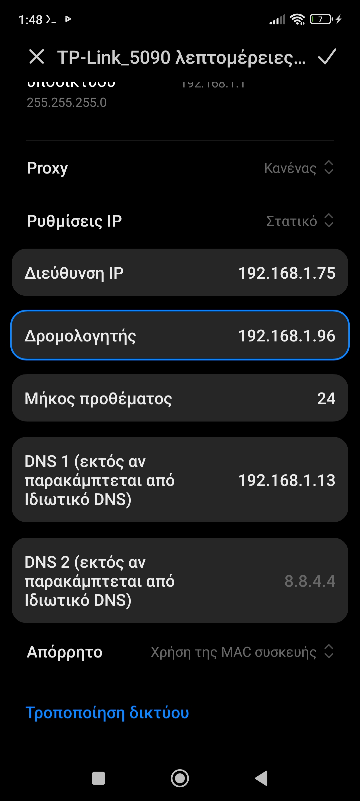
(the IP of the VM is 192.168.1.96)
Now let’s try pinging without having added any rules.
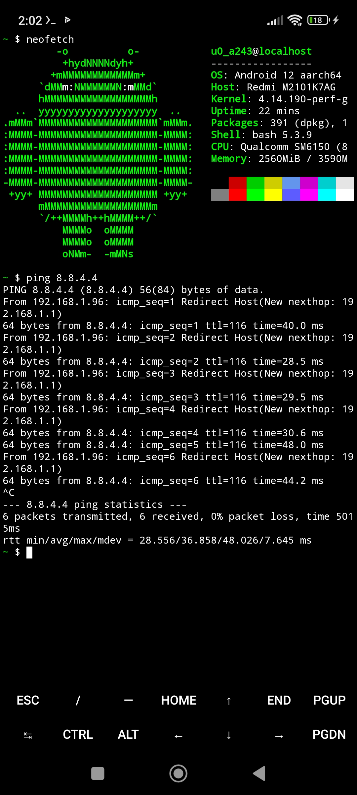
(We can see that the pings are working normally.)
Now, even though we have a rule to drop packets in the OUTPUT chain, it continues to route them normally to 8.8.4.4. This happens because we don’t have a rule in the FORWARD chain. To do this, we run the following command.
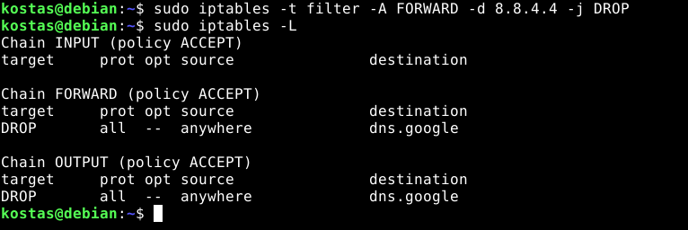
(Now we can see the rules in both chains.)
Now that we’ve done that, let’s try pinging from the host.
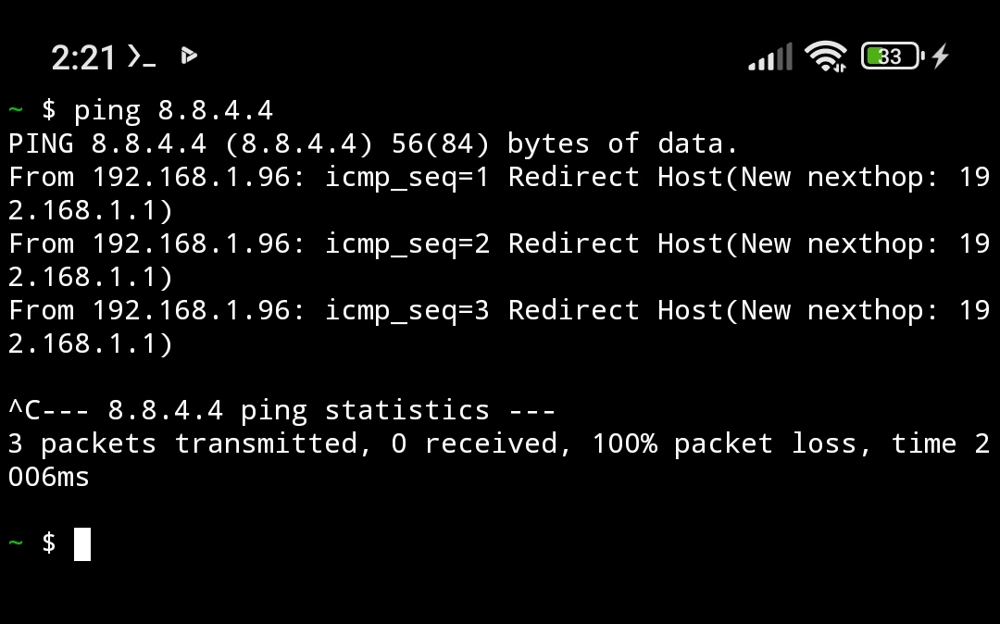
(We can see that we have 100% packet loss, meaning that the pings are not working.)
To delete them, we first list them by number using the following command:
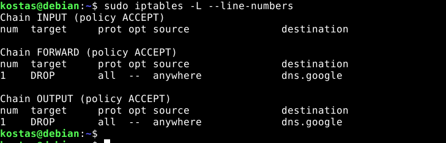
And we delete it using the -D flag, followed by our chain and the rule number.
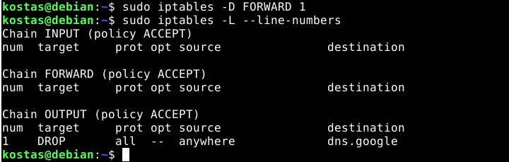
And
(We can also specify the table, although here the default is filter, even if we don’t include it.)
Final takeaway
The final takeaway regarding iptables is that it is a very useful tool for routers, firewalls, and servers. We’ve only scratched the surface with a few examples, but its use cases can be extended much further.